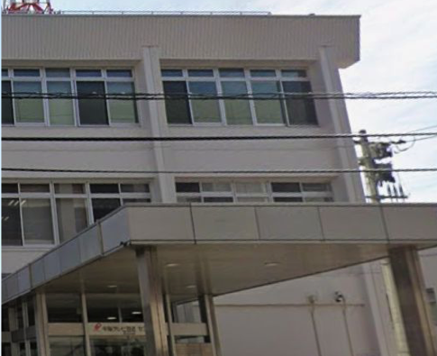
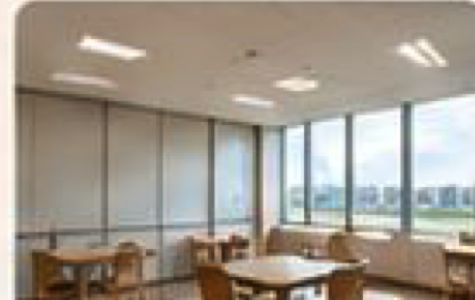
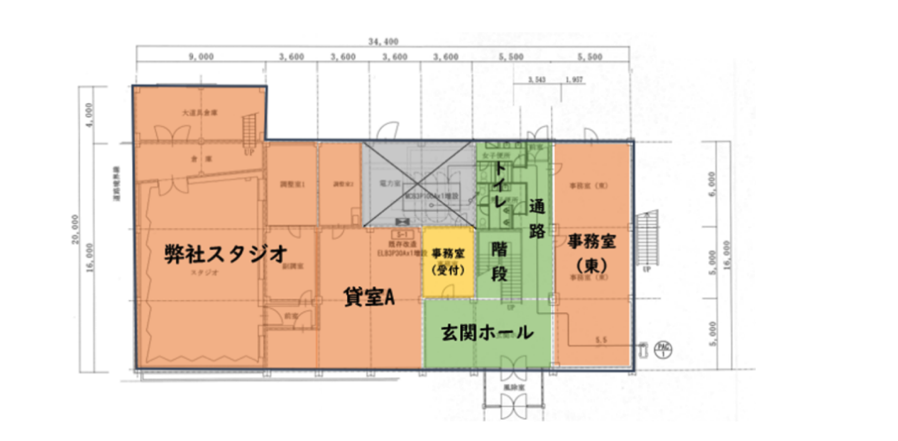

「介護される場所」から、
「誇りを持って人生を学び直す場所」へ。
シニアアカデミア YURU-RE:（ゆるり）は、従来の「お世話型・身体機能維持」にとどまらず、「大人の知的学び舎 ── 最終学歴の更新」を中核コンセプトに据えた革新的デイサービスです。中海テレビ放送「千日前センタービル1階」を舞台に、知的好奇心・身体調律（ゆるダン®︎）・先端スマホ連携を融合した次世代コミュニティを創造します。
社会的背景と国の動向：なぜ今「緩和型・特化型アカデミア」が求められるのか？
平均寿命の延伸に伴い、シニア世代の身体能力・認知機能は過去と比較して約10〜15歳「若返っている」と言われています。従来の「至れり尽くせりのフルサービス介護」と、現在の元気で自立意識の高いシニア層との間に大きなギャップが生じています。
現代シニアの心身の若返りと旧来型デイのミスマッチ
- 「お世話されること」への強い心理的拒否：「自分はまだあんなに老け込んでいない」「子ども扱いのような塗り絵やお遊戯はプライドが許さない」と敬遠するシニアが急増。
- 長時間の拘束・不要な食事や入浴：元気な軽度シニアにとって、終日拘束や一律の入浴・昼食は過剰。もっとスマートに、自分の意志で通いたいニーズが顕在化。
国の動向：一律フルサービスから「部分緩和型・自立特化型」へ
- 基準緩和型・総合事業への移行推進：社会保障審議会・厚生労働省は、軽度者（要支援・要介護1〜2）に対する一律の重度者向けフルサービス給付を見直し、自治体ごとの「緩和された基準による通所型サービス（総合事業・短時間型）」への移行を強力に推進。
- 「自立支援・社会参加」の重視：介護給付費抑制と健康寿命延伸のため、単なる預かりではなく「機能訓練」「知的好奇心刺激」「社会復帰・卒業」を促すプログラムが制度的にも優遇される方向性。
「介護認定」のコペルニクス的転換：ネガティブから「栄誉ある入学切符」へ
要支援・要介護認定を受けることは、多くの高齢者や家族にとって「自立を失った」「衰えた」「情けない」という深い精神的ショック（スティグマ）を伴います。YURU-RE: はこの認識を根本から覆します。
介護保険の認定証は、公的制度を活用して一流の学びと健康調律を受けられる「シニアアカデミアへの入学切符（ゴールドパスポート）」である。
「認定が下りたから、あのセンビルの大人の大学に入学できる！」と、家族や友人に誇らしく語れるステータスへ。シニアアカデミア 学生証
要支援・要介護認定を受けた方が「学生」として登録され、単位取得・ゼミ活動・研究発表を通じて人生のステージを高めていく仕組み。
なぜ「最終学歴の更新」なのか？ ── 総務省国勢調査データが示す動かぬ証拠
「最終学歴の更新」という言葉は、単なるキャッチコピーではありません。現代の70〜90代シニアが過ごしてきた歴史的時代背景と客観的統計データに裏打ちされた、シニアの自己尊厳を揺さぶる切実な真実です。
戦時下・戦後直後の混乱期。大学進学は社会のごく一握りの特権層のみに限られていた時代。
中卒での集団就職（金の卵）が主流。特に女性の大学進学率は1〜2%台と極めて限定的。
高度成長期を支えた世代。大学進学率は上昇したものの、約85%は大学進学を経験していない。
統計が証明する「人生で初めて大学に通う歓び」
統計が示す通り、現在の70〜90代の実に85%〜95%以上は「大学教育を経験していない世代」です。戦前・戦後の復興期、家族を支えるために進学を断念して働きに出た方、時代的な制約から進学の道が閉ざされていた女性たちが大半を占めます。
その方々が、80歳・90歳を迎えて「大人のアカデミア（大学）」に通い、鳥取大学の教授陣や先端の知的講義に触れ、仲間と議論を交わし、学生証を胸に提げて学ぶこと──。それは、単なる暇つぶしのレクリエーションではなく、「自分の人生で叶わなかった大学生活を今、初めて経験する歓び」であり、「生涯をかけて自身の最終学歴を更新する誇り」そのものです。
センビル進出ストーリー：2段階アプローチ
センビル「受付・ビル管理業務」受託 ＆ スマホ窓口先行
現在センビルのビル管理を行っている委託先（R-tech等）から、YURU'Qがビル管理・受付業務を移管受託。受付に中海スマホ相談窓口を先行設置し、中海テレビ社員様・ビル来館者との日常的な接点と強固な信頼関係を先行構築します。
センビル1階 貸室Aに「シニアアカデミア」を開校！
先行して築いた信頼関係と受付動線を基盤に、1階の旧事務所フロア「貸室A（約72㎡）」を賃貸契約してデイサービス「シニアアカデミア YURU-RE:」を本開校。隣接の中海スタジオや玄関ホールと連携し、まちなかシニア拠点を完成させます。
センビル外観・内観 ＆ 1階公式間取り図面

センタービル 正面エントランス外観中心市街地の主要動線に面し、前面道路からフラットにアクセス可能。近隣のコムスク・髙島屋・公会堂を行き来するシニアの回遊動線上に位置する絶好の立地です。

第2フェーズ活用予定：貸室A（約72㎡）イメージ大きな窓から自然光が差し込む旧事務所スペース。定員18名前後の半日型デイサービスに最適な広さ（72㎡）を持ち、開放的な講義・運動空間を構築可能。

シニアアカデミアの活動拠点。定員18名前後の半日型機能訓練＆知的学習空間。前面道路側に面し採光良好。
管理業務 ＆ スマホ窓口。正面玄関すぐの位置。ビル全体の受付と中海スマホ相談機能を一体運用。
二重ドア構造の風除室を備えた広々としたエントランス。車椅子や足腰の弱いシニアも安心・安全に乗降・出入り可能。
BCP用スタジオ。空き時間の時間貸し運用を検討。アカデミアの公開講義やテレビ番組収録連携の可能性も。
アカデミアを構成する3大提供プログラム
① 知的自立支援・カルチャー講義
鳥取大学教授陣や地元専門家と連携した「現代教養・健康科学・歴史・AIリテラシー」。一方的な聴講ではなく、発言やディスカッションを伴うゼミ形式で認知機能を賦活。
② 身体調律 ＆ ゆるダン®︎
SNS総再生1億回超の独自メソッド。椅子に座ったままでも行える軽快なリズム運動。看護師・機能訓練指導員が個別評価を行い、転倒予防・歩行安定・ADL自立を支援。
③ 中海スマホ常設相談窓口
訪問対応で逼迫する中海テレビ様の現場を救う「来店型」一次相談窓口。通所ついでに気軽にスマホの疑問を解消。シニアのデジタルデバイドを解消し、中海スマホの解約防止と獲得増に貢献。